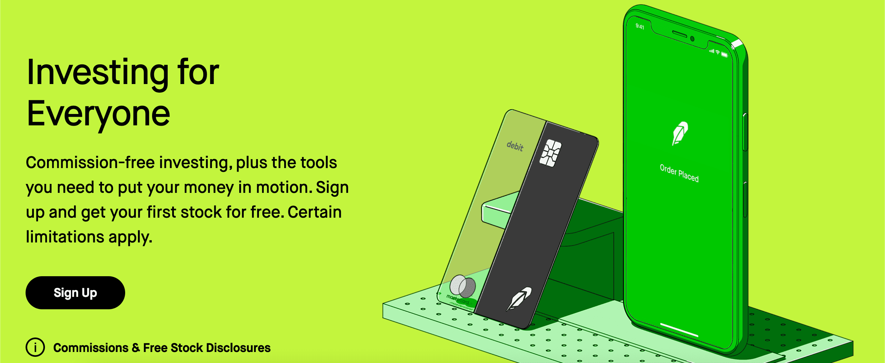
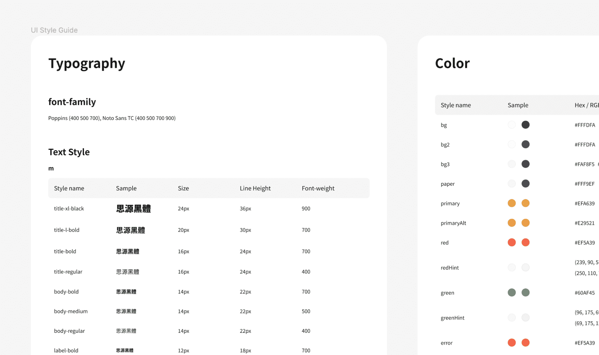
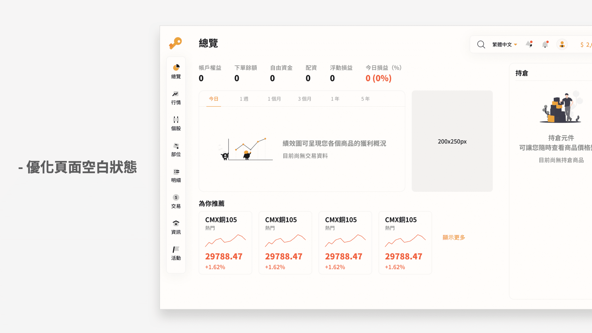

專案的誕生來自於去年初老闆觀察到 Robinhood 用戶爆炸性的成長，意識到有投資意願的年輕人比例其實非常高，但東南亞地區似乎沒有品牌特別針對年輕的投資新手做出區隔，因此希望團隊能夠開發一個能在上面投資股票、期貨等商品的一站式交易平台。
Photo by
Priscilla
Du Preez
on
Unsplash
2021.1-現在
UIUX Designer
Design System 建立及維護、流程規劃、Mockup 產出、Design QA
專案的誕生來自於去年初老闆觀察到 Robinhood 用戶爆炸性的成長，意識到有投資意願的年輕人比例其實非常高，但東南亞地區似乎沒有品牌特別針對年輕的投資新手做出區隔，因此希望團隊能夠開發一個能在上面投資股票、期貨等商品的一站式交易平台。
在專案開發中後期，我們得到了一些來自身邊朋友和客戶的回饋，其中最多人反應認為平台的註冊流程太長，另一個較特別的則是有人認為無法信任我們的平台，無論哪個都是影響使用者願不願意使用我們平台的關鍵問題，因此團隊決定針對產品進行優化。
目前市場上並非沒有類似的產品，對使用者來說我們是全新又陌生的平台，而從商業層面來看「開戶數」又是投資平台非常重要的指標，如何在與使用者的第一次接觸營造良好的印象會是很重要的事情，結合前面提到的問題，我們認為可以從產品的「前期體驗」下手。
由於在開發前期時程較趕，團隊並沒有時間和資源投入使用者研究，如何透過各種方法輔助設計決策是這個專案的一大挑戰。
目前市場上並非沒有類似的產品，對使用者來說我們是全新又陌生的平台，而從商業層面來看「開戶數」又是投資平台非常重要的指標，如何在與使用者的第一次接觸營造良好的印象會是團隊很重要的目標。
從市場及目標用戶來看，最直接的競品有 etoro、牛牛、老虎證券等大品牌；Robinhood 則是提供相同服務但 TA 地區不重疊，主要作為設計參考對象。
在這個專案中我最主要是透過競品分析、從視覺及互動層面切入分析輔助設計決策，但有很多關於使用者的洞察是從和團隊成員討論和聊天的過程中得到的。
在和其中一個接觸股票投資不久的團隊成員聊天時，他就提到他會喜歡使用
Robinhood 是因為「點擊手機螢幕上那個 Robinhood 的 icon
時，心情就跟點進其他社群軟體一樣輕鬆。」

繼續深入瞭解後，發現一個很重要的原因其實是因為「同學都在用」，這部分牽扯到 Robinhood 特殊的推薦分享機制，除此之外，如果從較單純的視覺及互動層面來看，Robinhood 有幾點明顯跟其他產品的差異：
資訊密度低有兩個涵義，一是直接減少提供在介面上的資訊，二是透過設計減輕在視覺上的負擔，Robinhood 在兩者都做到了，但反過來說較資深的投資者基本上完全不會考慮使用 Robinhood。

在交易市場中紅綠色通常被用來強調買賣及漲跌的資訊，但 Robinhood 很大膽地使用了綠色作為品牌的主色， 除此之外，Robinhood 擁有非常突出且一致的品牌視覺，從行銷宣傳端的 banner 到產品本身都能看到大量符合品牌調性的視覺及插畫，相比傳統交易軟體顯得更有「個性」。
以註冊開戶流程為例，Robinhood 在介面上的做法是維持「一頁一個動作」，好處是每一頁的負擔減少，但缺點是目前的設計看不出總共需要填寫多少資料，使用者很有可能在中途失去耐心而離開。
回到我們產品本身，這次的設計希望可以達到幾個較具體的目標：
首先由於這個專案主要是由老闆及 PM 決定需要放上產品的資訊，所以在降低資訊密度的部分，我的第一個做法是透過視覺增加產品留白及間距。以報價頁為例，在同樣螢幕尺寸下，我們（右圖）增加了不少報價欄位的高度。

事實上這個設計當初跟老闆來回討論了一段時間，他認為使用者能在第一眼看到越多報價就越能加快判斷，繼續深入討論後發現他是以「資深、專業交易員」的角度看待這件事情，但對新手來說，第一屏過多的資訊可能反而會造成無形的壓力。
接著在交易頁我們在設計上做了一個調整 —— 隱藏了下單的進階選項。如下圖，其中條件跟倉別是系統預設的選項，一樣是屬於較資深的使用者才會用到的功能，我們選擇預設把他隱藏起來，讓使用者能夠更專注在需要填寫的欄位。
另一方面，這個決定也間接影響到了另一個設計 ——
我們在交易頁的下半部加入了持倉及預期盈虧的資訊。
會有這個設計是因為在討論過程中有位團隊成員提到，如果在下單後使用者能夠馬上看到持倉的預期盈虧，那就能更方便判斷下一步的動作了。雖然這個決定可能會跟「降低資訊密度」的目標有衝突，但團隊認為這或許是個滿不錯的假設。
那麼問題就變成如何讓交易頁跟持倉的資訊不要互相干擾？
最後我的做法是在保留底部 tab bar 的情況下使用類似 modal view
的視窗做出區隔，讓使用者在查看持倉資訊時不會被交易頁干擾，同時也能夠清楚知道關閉當前視窗後就能回到交易頁。
雖然是比較不常見的設計模式，但考量到產品的 TA
是屬於學習較快、對科技較熟悉的族群，我們覺得這是可以嘗試的方法。
除了前面提到的間距外，這個專案在初期也針對顏色、字體、陰影等樣式做了完整的規範，其中在顏色規劃的部分，有一個小細節值得注意，Robinhood 之所以能使用綠色作為品牌的主色，是因為歐美地區的綠色代表的是「漲」，TA 主要為亞洲地區的我們自然不可能用綠色作為主色。
在跟老闆來回討論後，確定他想傳達的品牌形象是「簡單、可靠的」，最後考量了形象及易讀性後選定了橘色作為品牌的主色，紅綠色使用了彩度較高的配色，按鈕等元件則使用了中等尺寸的圓角。
.png)
如同前面提到的，對使用者來說我們是完全陌生的產品，在市面上已經有類似產品的情況下我們必須為自己爭取機會，因此團隊決定在產品提供模擬交易的功能，讓使用者可以在註冊前就先一步體驗我們的產品。
模擬交易除了提供使用者先行體驗的機會之外，另一個用途在於方便使用者利用模擬資金進行模擬的投資策略練習，其中也產扯到模擬帳號是否要綁定會員帳號的問題，在跟工程師討論後，最後在時程的限制下決定使用較好做的方法。
但還有個問題要解決，
在使用者第一次進入我們的產品時，會有非常多區塊及元件 ——
包括績效圖、持倉欄位等等，是處於沒有資料的空白狀態。
為了讓使用者能夠有完整的體驗，我們最後選擇在這些空白狀態的頁面加入生動的插圖並搭配適當的說明文字，一來不讓使用者困惑功能是否正常，二來明確告訴使用者元件的用途並加強品牌的風格，在部分區塊也能當作註冊會員的誘因。
最後的最後，在專案進入尾聲後，我利用時間整理了幾點下次能夠改進的地方：
這個專案是團隊第一次嘗試導入 Design QA，遇到最大的問題就是如何讓團隊及老闆理解這件事情的重要性，最後我的做法是事先透過 Notion 整理一份有完整格式的文件，在團隊開會時提出並展示畫面的差異對於體驗的影響，比較可惜的是由於太晚進行，部分細節調整在斟酌過後決定暫延。
如同一開始提到的，這個專案的 TA 包含東南亞地區使用者，但團隊前期主要都是以中文做設計及開發，導致後期在排版的調整上花了不少時間。
在專案初期我針對顏色、字體等樣式整理了完整的規範，但忽略了深淺色模式可能會使用不同的顏色參數，同樣導致後期花了額外的時間進行調整。
最後，這個專案是我第一次使用 Figma 做為主要設計工具，畫面即時更新共享的特性雖然大幅提升了團隊溝通效率，但個人的筆記和標注混雜在一起，造成工程師難以區分需要的資訊，之後應該會在 page 的分類上做得更明確。